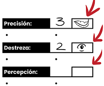
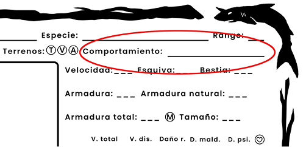

Busca tu bestia para ver sus atributos, habilidades y características.
Buscar bestias
Edad
Escribe la edad de tu bestia.
Etapa de vida de tu bestia
Define la etapa del ciclo de vida en la que se encuentra tu bestia.
Cada etapa puede modificar sus atributos.
Crecimiento: Etapa de desarrollo del organismo.
+1 en destreza y -1 en inteligencia.
Juventud: Etapa en la que alcanza progresivamente
la madurez.
+1 en inteligencia y -1 en destreza.
Si creas tu bestia en esta etapa, no se aplican modificaciones.
Estas solo se aplican si tu bestia llega a esta etapa dentro del juego.
Adultez: Etapa de madurez reproductiva de la especie.
Cuando tu bestia alcanza esta etapa dentro del juego, podrá buscar
tener crías (Rango 13).
Vejez: Etapa de envejecimiento y disminución
progresiva de algunas funciones del organismo.
-1 en destreza, -1 en fuerza y +2 en inteligencia.
Tu bestia ya no podrá tener crías.
Género
Elige: Macho o Hembra.
Características de la Bestia
Usa los datos de la bestia elegida.
Terreno: viento, agua, tierra u otro.
Armadura Natural: defensa innata.
Tamaño: dimensiones.
Rango: según la bestia o el máster.
Atributos
Cada bestia tiene atributos base definidos.
Puedes añadir +1 a un atributo.
Bonus especiales
Dibuja 4 ojos y 2 hojas en los recuadros de los atributos, deberas escojer que atributos les daras esos bonus:
Ojo: Mas 1 a la tirada
Hoja: Se puede relanzar la tirada.
Estos bonus son temporales, una vez usados se deben borrar.

Elegir enfoques
Enfoques
Los enfoques otorgan un bonificador de +2 en las tiradas relacionadas
con una habilidad específica dentro de un atributo.
Habilidades
Anota las habilidades de la bestia elegida.
Ataques
Anota el ataque de la bestia elegida.
Paso 2 de 8
Paso 2
Comportamiento de las Bestias
Las personalidades representan el temperamento base de una bestia y otorgan un bonificador
de atributo asociado a su comportamiento.
Tímido
Bestia que siente inseguridad o miedo al interactuar con otros.
Bonificación: +1 Precisión
Agresivo
Bestia que muestra ira o hostilidad fácilmente, a menudo de forma impulsiva.
Bonificación: +1 Fuerza
Ansioso
Bestia que siente preocupación excesiva o nerviosismo ante situaciones.
Bonificación: +1 Destreza
Frío
Bestia que muestra poca empatía o calidez emocional hacia los demás.
Bonificación: +1 Instinto
Alegre
Bestia que transmite buen humor y entusiasmo en su forma de ser.
Bonificación: +1 Comunicación
Inseguro
Bestia que duda constantemente de sí misma o de sus decisiones.
Bonificación: +1 Percepción
Coqueto
Bestia que usa gestos o palabras para mostrar interés romántico o atracción.
Bonificación: +1 Comunicación
Cortés
Bestia que trata a los demás con respeto, educación y buenas formas.
Bonificación: +1 Comunicación
Egocéntrico
Bestia que piensa principalmente en sí misma y sus propias necesidades.
Bonificación: +1 Voluntad
Reflexivo
Bestia que analiza las situaciones antes de actuar o tomar decisiones.
Bonificación: +1 Instinto
Perezoso
Bestia que evita hacer esfuerzos o actividades por falta de motivación o energía.
Bonificación: +1 Percepción
Compasivo
Bestia que muestra empatía y deseo de ayudar a quienes sufren o necesitan apoyo.
Bonificación: +1 Comunicación

Paso 3 de 8
Paso 3
Aspectos Sociales
En esta sección definirás cómo es tu relación con tu bestia vinculada.
Existen tres aspectos sociales que representan distintos elementos de vuestro vínculo:
Aspectos Sociales
En esta sección definirás cómo es tu relación con tu bestia vinculada.
Existen tres aspectos sociales que representan distintos elementos de vuestro vínculo:
1. Entendimiento
Representa qué tan bien te comprende tu bestia mediante palabras, gestos, señales o lenguaje corporal.
Comandos básicos:
Comprende órdenes sencillas como «siéntate», «dame la pata», «ven» o «ataca». Necesita instrucciones claras y directas.
Comandos avanzados:
Comprende órdenes más complejas, puede seguir instrucciones encadenadas y distinguir entre diferentes situaciones.
Comunicación estratégica:
Comprende estrategias elaboradas, reconoce señales específicas y puede interpretar tus intenciones mediante gestos o movimientos sutiles.
Conexión profunda:
Puede comprenderte más allá de las palabras y el lenguaje corporal. Es capaz de interpretar emociones, intenciones y pensamientos mediante una conexión telepática.
Conexión intuitiva:
Existe una conexión telepática completa, incluso a distancia. Puede percibir tus intenciones, presentir tus necesidades y comprender lo que deseas comunicarle sin necesidad de palabras.
2. Confianza
Representa la seguridad que ambos tienen el uno en el otro. Refleja la cooperación, la honestidad y la certeza de que el otro actuará de forma adecuada cuando sea necesario.
Desconfianza:
Tu bestia todavía no confía plenamente en ti. Puede obedecerte, pero se muestra cautelosa, independiente y reacia a ponerse en situaciones de riesgo por tu causa.
Confianza inicial:
Comienza a reconocerte como alguien de confianza. Acepta tu compañía, permite que te acerques y coopera contigo, aunque todavía puede dudar ante situaciones peligrosas.
Confianza mutua:
Confía en tus decisiones y tú puedes confiar en las suyas. Coopera voluntariamente, acepta tu ayuda y permanece a tu lado incluso cuando las circunstancias se complican.
Lealtad inquebrantable:
Tu bestia confía profundamente en ti. No duda en seguir tus indicaciones en situaciones difíciles, permite que la protejas y está dispuesta a arriesgarse por ti.
Vínculo absoluto:
Ambos confían plenamente el uno en el otro. No necesitan cuestionar las intenciones del otro y pueden actuar en perfecta coordinación. Incluso separados, la bestia sabe que puede contar contigo y viceversa.
3. Valentía
Representa la disposición de tu bestia para enfrentarse a peligros, luchar y afrontar dificultades mientras permanece a tu lado.
Temerosa:
Si se siente muy herida, asustada o superada por un enemigo, huirá para ponerse a salvo. Evitará enfrentamientos que considere demasiado peligrosos.
Cautelosa:
Si se siente muy herida, intentará huir buscando reunirse contigo o encontrar un lugar seguro. Puede enfrentarse a peligros moderados, pero evitará situaciones que pongan seriamente en riesgo su vida.
Determinada:
Está dispuesta a enfrentarse a enemigos y situaciones peligrosas para protegerte. Aunque puede sentir miedo, no huirá fácilmente y tratará de mantenerse a tu lado.
Intrépida:
Afronta peligros considerables sin vacilar. Está dispuesta a luchar incluso estando herida o en desventaja, especialmente si tú estás en peligro. El miedo rara vez la hace retroceder.
Heroica:
Su voluntad es extraordinaria. Está dispuesta a enfrentarse a amenazas abrumadoras y superar sus propios límites para protegerte. Incluso ante situaciones que parecen imposibles, no te abandonará voluntariamente.
Diferencias entre los aspectos
Entendimiento: ¿Cuánto comprende lo que quieres comunicarle?
Confianza: ¿Cuánto confía en ti y en vuestra relación?
Valentía: ¿Hasta qué punto está dispuesta a afrontar el peligro estando contigo?
Estos tres aspectos son independientes entre sí. Una bestia podría tener un entendimiento 5, confianza 2 y valentía 4: comprende perfectamente a su compañero, pero todavía no confía del todo en él y, aun así, tiene un gran valor para afrontar peligros.
Tipo de Vinculación
El primer paso es definir el tipo de vínculo que existe entre tu Nurkano y su bestia.
Cada tipo de vinculación representa la forma en que normalmente se relacionan y determina
las puntuaciones iniciales de los aspectos sociales.
Elige una de las siguientes opciones y anótala en el apartado
Tipo de Vinculación de tu hoja de personaje.
Compañero de Guerra
Tú y tu bestia destacan luchando juntos. El combate es el momento donde mejor encuentran
su sincronía.
Compañero Leal
Tú y tu bestia disfrutan de la compañía mutua en los momentos tranquilos de la vida.
Compartir tiempo juntos fortalece vuestro vínculo.
Compañero de Sangre
Existe una conexión profunda entre ambos. En los momentos más difíciles saben que pueden
contar el uno con el otro sin necesidad de palabras.
Compañero Estratégico
La planificación y la coordinación son vuestra mayor fortaleza. Vuestro vínculo destaca
por la estrategia y la capacidad de actuar como una sola mente.
Compañero de Armas
Ambos se protegen mutuamente en combate. Cada uno vigila la espalda del otro y lucha
como parte de un mismo equipo.
Compañero de Juego
La relación entre ambos se basa en la diversión, los gestos, las señales y la compañía.
Es uno de los vínculos más tiernos entre un Nurkano y su bestia.
🎭 Bonus por Tipo de Vínculo
Cada tipo de vínculo otorga un +1 a atributos específicos, tanto para el Nurkano como para la bestia.
El atributo de Inteligencia del Nurkano se refleja como Instinto en la bestia.
El bonus se aplica al mismo atributo en ambos (Nurkano y bestia), según el tipo de vínculo elegido.
⚔️ Compañero de Guerra
+1 a Pelea, Inteligencia, Voluntad o Precisión.
🤝 Compañero Leal
+1 a Voluntad o Comunicación.
🩸 Compañero de Sangre
+1 a Voluntad o Constitución.
🧠 Compañero Estratégico
+1 a Inteligencia, Comunicación o Percepción.
🗡️ Compañero de Armas
+1 a Pelea o Precisión.
🎲 Compañero de Juego
+1 a cualquier atributo excepto Constitución.
Puntuaciones Iniciales
Una vez elegido el tipo de vinculación, asigna las siguientes puntuaciones y bonificadores
a los aspectos sociales.
Compañero de Guerra
Puntuación
Bonificador
Entendimiento
2
x2
Confianza
1
x1
Valentía
3
x3
Compañero Leal
Puntuación
Bonificador
Entendimiento
2
x2
Confianza
3
x3
Valentía
1
x1
Compañero de Sangre
Puntuación
Bonificador
Entendimiento
1
x1
Confianza
3
x3
Valentía
2
x2
Compañero Estratégico
Puntuación
Bonificador
Entendimiento
3
x3
Confianza
1
x1
Valentía
2
x2
Compañero de Armas
Puntuación
Bonificador
Entendimiento
1
x1
Confianza
2
x2
Valentía
3
x3
Compañero de Juego
Puntuación
Bonificador
Entendimiento
3
x3
Confianza
2
x2
Valentía
1
x1
Valor Máximo y Diferencia
¿Quieres calcularlo tu o pides ayuda a la calculadora?:
Cada aspecto social tiene una puntuación actual, un valor máximo y una diferencia.
Puntuación: valor actual del aspecto social.
Máximo: normalmente es 5, a menos que el Director de Juego indique lo contrario.
Diferencia: se calcula restando la puntuación al valor máximo e ignorando
cualquier signo negativo.
Ejemplos:
2 − 5 = -3 → Diferencia: 3
1 − 5 = -4 → Diferencia: 4
0 − 5 = -5 → Diferencia: 5
Desvinculación y Vinculación
Estos valores representan el estado general de la relación entre tu Nurkano y su bestia.
Desvinculación
Suma las diferencias actuales de Entendimiento, Confianza y Valentía.
El resultado es tu valor de Desvinculación.
Vinculación
Resta la Desvinculación a 10.
Fórmula:
Vinculación = 10 − Desvinculación
Ejemplo
Entendimiento: Diferencia 5
Confianza: Diferencia 4
Valentía: Diferencia 4
Desvinculación = 5 + 4 + 4 = 13
Vinculación = 10 − 13 = -3
¿No pudiste? visita la calculadora:
Paso 4 de 8
Paso 4
Detalles adicionales
Detalles adicionales
❤️ Vida (Constitución)
Constitución
Vida
-2
40
-1
45
0
50
1
55
2
60
3
65
4
70
5
75
6
80
7
90
8
100
9
110
10
130
11
145
12
160
13
175
14
180
15
200
🔮 Nur (Voluntad / Inteligencia - Hechicero Caótico)
Puntuación (Voluntad / Inteligencia)
Nur
-2
0
-1
0
0
0
1
5
2
8
3
10
4
13
5
15
6
18
7
22
8
25
9
28
10
30
⚡ Velocidad / Destreza
Puntuación en destreza
Velocidad
-2
2
-1
2
0
2
1
3
2
3
3
4
4
4
5
5
6
5
7
6
8
6
9
7
10
7
11
8
12
8
13
9
14
9
15
10
🌀 Esquiva
La esquiva es igual a la destreza y si tienes el enfoque de esquivar mas 2.
Paso 5 de 8
Paso 5
Equipo
Escribe un objeto especial que conecte a tu bestia contigo. Tanto tú como ella tendrán una copia en la sección de equipo, este objeto será necesario para hacer ceremonias con tu bestia vinculada
Ejemplos: Anillo de madera, arete de pluma, tatuaje runa, esmeralda...
Paso 6 de 8
Paso 6
Crear el trasfondo de tu bestia
Trasfondo
El trasfondo de tu bestia sirve para conocer su pasado,
entender cómo llegó a formar un vínculo con su Nurkano
y descubrir qué experiencias han marcado su vida.
No necesitas responder todas las preguntas. Elige las que más
te interesen y utiliza tus respuestas para crear una historia
que encaje con el mundo y con tu Nurkano.
¿Cómo conoció la bestia a su Nurkano?
Elige una de las siguientes opciones o lanza un dado para
decidirlo al azar:
La bestia vivía cerca de la aldea y tenía un papel importante
en la formación del vínculo con los jóvenes habitantes.
Un familiar o amigo del Nurkano tenía una bestia que tuvo crías
y decidió regalarle una de ellas cuando era joven.
Un familiar o amigo le encargó al Nurkano cuidar de la bestia,
quizá con la promesa de regresar por ella. Sin embargo,
nunca regresó y finalmente el Nurkano decidió quedarse con ella.
La bestia llegó hasta el Nurkano después de perderse,
quedar herida o convertirse en huérfana.
El Nurkano encontró a la bestia perdida, herida o huérfana
y decidió ayudarla o salvarle la vida.
La bestia encontró al Nurkano durante un momento difícil
de su vida y decidió permanecer a su lado.
La bestia y el Nurkano fueron capturados o puestos en cautiverio
y se conocieron mientras intentaban sobrevivir juntos.
Este encuentro es importante: piensa en por qué decidieron
permanecer juntos y qué hizo que su vínculo fuera más
fuerte que una simple relación entre Nurkano y compañero.
Personas importantes
Elige 2 NPC principales relacionados con el pasado
de la bestia, o 1 NPC principal y 2 secundarios.
Un familiar del Nurkano o de la bestia.
Un amigo.
Un maestro o mentor.
Un rival.
Un enemigo.
¿La bestia tiene un enemigo?
Puede existir una criatura, persona o incluso una facción
que tenga algún conflicto con la bestia.
Piensa por qué son enemigos y qué ocurrió entre ellos.
Este enemigo también puede formar parte de la campaña actual,
pero consúltalo con tu Director de Juego
antes de incluirlo como parte importante de la historia.
Lugares importantes
Elige hasta 3 lugares especiales relacionados
con el pasado de la bestia.
Puede ser su antiguo hogar, el lugar donde nació, el sitio donde
conoció al Nurkano, una guarida, un bosque, una montaña o cualquier
otro lugar que tenga un significado especial.
Algo sin resolver
¿Existe algo del pasado de la bestia que todavía no se ha resuelto?
Puede ser la desaparición de su familia, una deuda, un enemigo,
la pérdida de su antiguo hogar o un misterio sobre su origen.
También puedes dejar un secreto que la bestia no conozca.
El Director de Juego puede decidir la verdad
y revelarla durante la campaña.
¿Tiene un objetivo?
Piensa qué quiere conseguir la bestia.
Puede ser encontrar a alguien, proteger un lugar,
regresar a su antiguo hogar o simplemente permanecer junto
a su Nurkano.
Temporada 4: Nur en los pasos
Premisa
Hace días, un mensaje de Nahomenur-Lua, el ciervo legendario de Naka-Sha, recorrió la nación de los bosques. Llegó a Nurkano y bestias vinculadas por igual, y no era una orden, era una petición:
La rana Shapelarkuva-Lua salió rumbo a la isla de hielo. Debía curar una aldea enferma y un ecosistema que se apaga. Pasaron los días y ningún bosque, río ni bestia ha sabido de ella. Sigan su rastro por toda Naka-Sha. Los espero en la aldea de Ken.
Que una bestia legendaria pida ayuda en vez de mandar ya es una señal de que algo anda mal. Quien responde sabe que la recompensa es grande, pero también que la rana no desaparece sin motivo.
Motivos para tomar la misión
Elige el motivo que mejor encaje con tu personaje, o propón uno propio.
Has cometido una falta y tu líder o una bestia guardiana te ordenó cumplir esta misión como penitencia.
Tu bestia necesita obedecer a la bestia legendaria de Naka-Sha y esta es la oportunidad de hacerlo.
Eres de las aldeas del sur de Amara, o alguien que quieres vive allá, y la rana tiene que llegar hasta ellos.
Necesitas una aventura importante que te dé renombre y haga que te recuerden en tu aldea o en tu nación.
Quieres encontrar a la rana y pedirle que cure a un familiar o conocido.
Escuchaste el rumor de que un Nurkano, planta o bestia poderosa la secuestró y quieres cazar al responsable.
Debes completar esta misión para que una pareja te acepte.
Buscas honor para tu clan, tu familia o tu nación.
Quieres explorar Naka-Sha desde una misión importante y con respaldo de una bestia legendaria.
Quieres lujos a cambio: las recompensas son bastantes y sabes lo que puedes pedir.
Otra: coméntasela al máster.
Un momento que la marcó
Elige un acontecimiento importante que haya cambiado a la bestia.
Puede haber sido una pérdida, una herida, una batalla,
la separación de su familia, el encuentro con el Nurkano
o cualquier otro momento que haya dejado una huella en ella.
¿Tiene algo especial?
Puedes darle una característica especial que la haga única:
un vínculo con una criatura poderosa, un linaje particular,
una marca, una habilidad extraña o una conexión especial
con algún lugar o personaje.
Si esta característica puede darle una ventaja importante,
consúltalo con tu Director de Juego.
¿Puede ocurrir algo en el futuro?
Puedes dejar preparado un evento que el Director de Juego
pueda utilizar durante la campaña.
Por ejemplo, alguien del pasado de la bestia podría regresar,
descubrirse el origen de su familia, aparecer un antiguo enemigo
o la bestia podría ser llamada de vuelta a su antiguo hogar.
Facciones
Puedes elegir una facción que haya tenido importancia en el pasado
de la bestia o en su relación con el Nurkano.
Algunas facciones pueden aceptar únicamente bestias, Nurkano
o miembros de determinadas naciones. Si tienes dudas,
consulta con tu Director de Juego.
Recuerda: el trasfondo no tiene que explicar toda
la vida de la bestia. Lo importante es saber de dónde viene,
cómo conoció a su Nurkano y qué razones tiene para permanecer
junto a él.
Paso 7 de 8
Paso 7
Nombra tu bestia vinculada
Cada nación posee un idioma propio con patrones fonéticos únicos.
Sistema de nombres de bestias
Estructura
[Sílaba del Nurkano vinculado] + [Sílaba de nación] + [Sílaba variable]